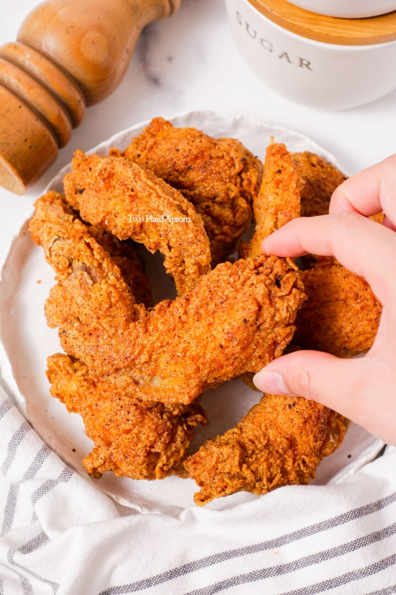

Fried Chicken

Description:
This is a great Fried Chicken recipe for all folks. You can slightly alter the measurements depending on yor liking however, the recipe as it is are great enough
Recipe
- 1 whole chicken(Aroung 1 to 1.5 kilogram)
- 1 tablespoon pepper
- 2 teaspoon vinegar
- 2 tablespoon salt
- 2 garlic
- 1 cup all-purpose flour
- 2 tablespoon chicken powder
- 1 bottle of Frying oil
- 2 large eggs
Steps
- Brime the chicken with water,3 tablespoon salt and pinched garlic for 12-24 hours
- Remove the chicken from the fridge bit never fry it while the meat is not in room temperature
- Air Dry the meat for around 10 minutes
- Season the flour with pepper, chicken powder and salt and mix it
- Pre heat the cooking oil at medium high heat. Never do the steps bellow until you are ready to fry the chicken
Coating the chicken and then waiting for more than a minute can ruin the breading texture and crispness
- Coat the chicken with the seasoned flour mildly
- Drop the chicken pieces in a battered egg
- Coat the chicken again with the seasoned flour until all skin are covered
- Fry the chicken until the coat is golden brown
- Enjoy!